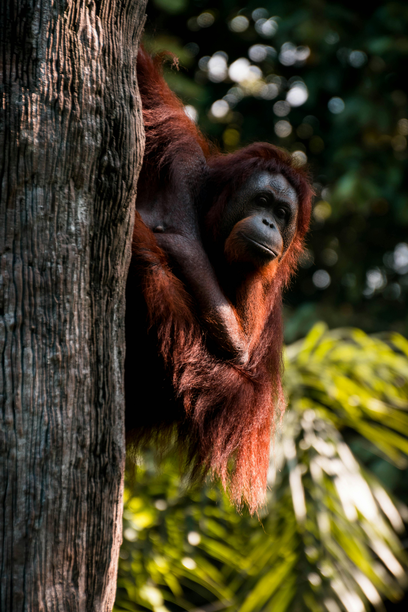

Most Famous Endangered Animals
Orangutan
Orangutans are a primate loved by all that have seen them. They are a large orange ape that are known for being intelligent. They have been known to use sticks to get bugs out of trees. Orangutans are labeled as critically endangered, since out of the three species of orangutan only 115,000 are left. The cause of their large scale loss of numbers is due to the their habitat being destroyed for natural resources. They spend most of their time living in trees. If action is not taken soon to help the ornagutans keep their environment, then their numbers could continue dropping.
Blue Whale
Blue whales are known to be the largest animal to live on Earth. They are found across the world in every ocean except the Arctic Ocean. The populations have been increasing since they are being protected. Their numbers were falling due to whale hunting, and today their biggest dangers are fishing gear trash and vessel strikes. Blue whales are a beautiful staple of the ocean, and represent the scale of our ocean wildlife.


Gorilla
Gorillas are the largest primate, and we share 98.6% of our DNA with them. They are known for their standing pose of resting on their knuckles. They are threatened by multiple sources, including hunting, habitat loss, human conflict, and disease. Gorillas are hunted and sold illegally in Africa. Commercial logging has affected the habitats of gorillas, similar to the orangutans. This problem of logging has affected countless species of animals across Africa, Asia, North America, and South America. Wars in the home of the gorillas has caused disease transmission and hunting. Gorillas can get sick from human diseases due to our similarities in DNA. Gorillas are one of our closest ancestors, and should be protected.